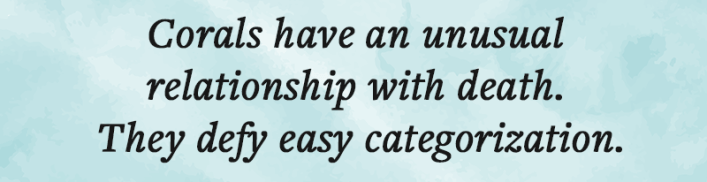
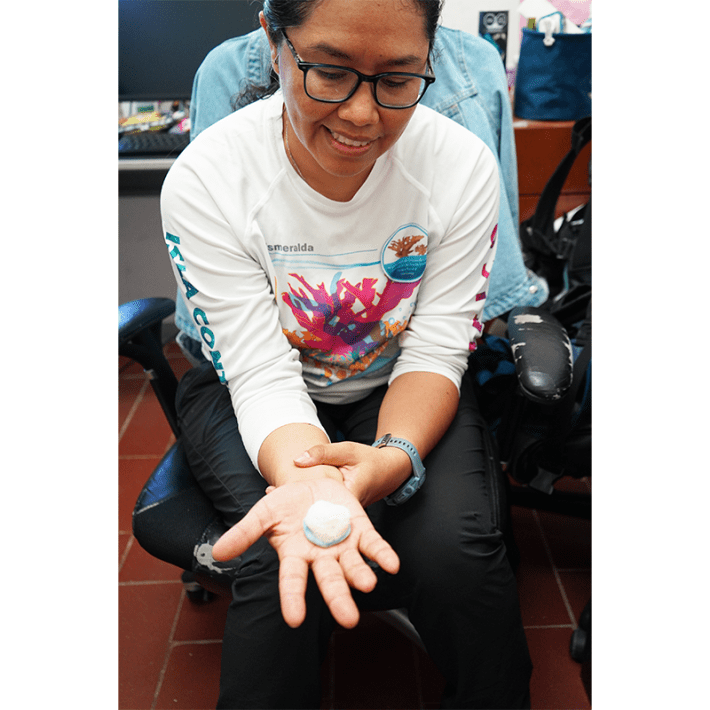
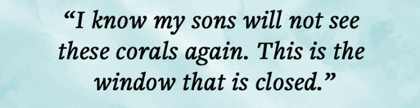
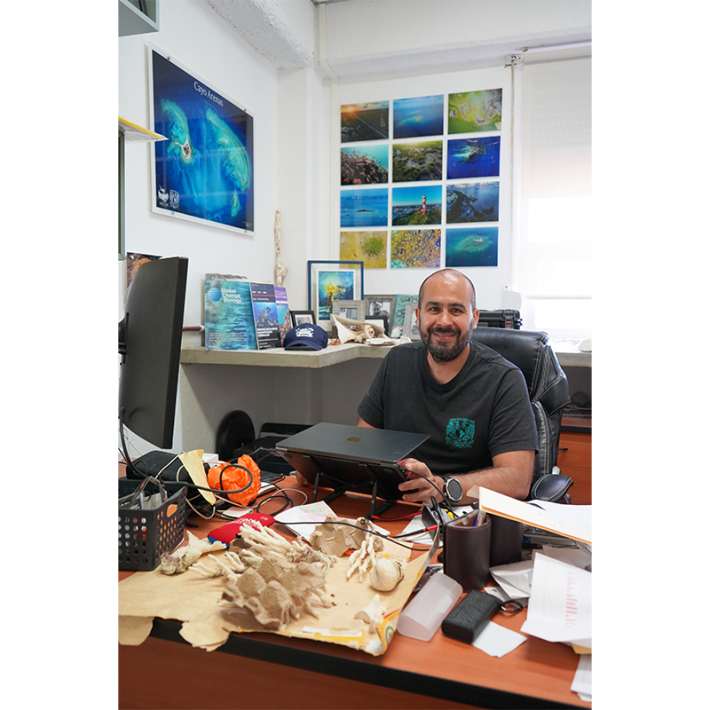
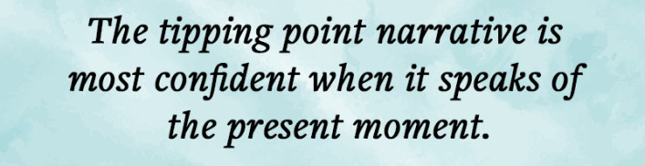

When I slide off the tiny panga, the water feels warmer than the air. It is late January in the Caribbean, and I am about to snorkel around a patch of reef immediately off the coast of Puerto Morelos in Mexico, a fishing village south of Cancun, the buzzy hub for tourists on the Yucatan Peninsula.
I’m at the northernmost point of the Mesoamerican Barrier Reef system, which extends for 700 miles and runs the coastline of four nations. It is second in size only to the Great Barrier Reef in Australia and is considered among scientists to be a harbinger for warm water coral reefs globally.
In 2025, Global Tipping Points, an international group of scientists led by Tim Lenton of the Global Systems Institute at the University of Exeter in England, warned of the collapse of six major Earth systems due to global warming. The systems include the Greenland Ice Sheet, Amazon Rainforest, ocean circulation, and coral reefs. The scientists state that reefs are the first major Earth system to have breached a point of no return.
“We can no longer talk about tipping points as a future risk,” Lenton told The Guardian. “The first tipping of widespread dieback of warm water coral reefs is already under way.”
Few reefs are as degraded as the one at Puerto Morelos. After 30 years of continuous study, local scientists have documented every shift in its decline. The 2025 Global Tipping Point study states the Mesoamerican Reef “faces collapse with devastating impacts.”

And yet when I dip my head into the water, the reef looks both beautiful and eerie. Enormous corals each the size of a Volkswagen Beetle give shape to the seafloor. These are Orbicella, large stony species, which over centuries built this reef. On closer inspection it is clear their surfaces are smudged with slimy algal growth. The fretted inundations, the ridges and crowns that give corals their elaborate outlines, look blunted over by some ugly, destructive carelessness. Still, fish continue to take residence inside their nooks and crannies; colorful, curious, otherworldly.
Within a quick half hour, I have seen hundreds of animals including groupers, angelfish, eagle rays, and lobster. My fellow snorkelers are thrilled. They snap underwater images they plan to share on social media, they tell me, as highlights of their trip. It is hard to immediately judge from their colorful photos if the corals are alive or not, and our guide, Xavier, who has been leading tours in these waters since the 1980s, chooses not to discuss it. Who can blame him? Telling the tourists that an international body of scientists has just declared the reef dead on arrival would not be good for business.
But in fact the reality about coral reefs is too complex and uncertain for binaries like living or dead, scientists in Puerto Morelos tell me. To call this moment in time a tipping point is to effectively close the book on coral reefs, precluding the resilience that has allowed them to persist against all odds since they first formed on Earth more than 400 million years ago.
The idea of a “tipping point” in Earth systems is relatively recent. The insight that shocks to natural ecosystems can upend their stable states of existence dates to research by theoretical ecologists in the 1970s. But the ecologists didn’t invent the term. Its origin can be traced to Morton Grodzins, a political scientist at the University of Chicago who, in the late 1950s, studied the “tipping point” of racial segregation in American neighborhoods.
Decades later, the concept caught the eye of writer Malcolm Gladwell, whose titular bestseller popularized the idea that small social phenomena could turn contagious. The book offered an appealing one-shoe-fits-all logic, applying the same mechanics to viral fashion trends as it did to the spread of syphilis in Baltimore or the falling crime rates of 1990s New York. It spotlighted small incidences with “massive, disproportionate effects” on the behavior of large cohorts of people. The term itself proved to be as viral as the trends Gladwell described.

REEF OUTREACH: Esmeralda Pérez-Cervantez of the National Autonomous University of Mexico strives to educate locals about their neighboring reef. She holds a plaster cast of a critically endangered starlet coral that children will decorate at an upcoming science fair. Credit: Elena Kazamia.
In the 2000s, Lenton introduced “tipping point” into climate science. He calls it a “nudge,” a tiny push that hurls a complex system from a balanced state to another. A pushed chair has a tipping point—the threshold it crosses when going from balancing upright to falling. Global warming is destabilizing natural ecosystems like coral reefs, causing escalating, irreversible damages.
Corals have an unusual relationship with death. Lorenzo Alvarez-Filip, a marine ecologist and researcher at the Reef Systems Unit of the National Autonomous University of Mexico (UNAM), affectionately calls corals “monsters.” As living things go, they defy easy categorization.
A coral is indeed a kind of mythological creation of interacting organisms living in a precarious equilibrium—part animal, part plant, and even mineral. (Roman poet Ovid described coral as “stony stalks” animated by the slain Medusa’s head, which Perseus placed on a bed of seaweed.) A colony of polyps, which are close relatives of sea anemones, makes up the animal part. Polyps are tiny, but visible to the naked eye. They coat the coral’s surface, and gradually build a skeleton beneath them, into which they can retreat when startled. The animal tissue of a coral is skin deep, and when the polyps die, only limestone remains. Its deposition is continuous over decades, sometimes centuries. Some living corals are millennia old.
Read more: “The Ocean Apocalypse Is Upon Us, Maybe”
To survive, polyps depend on algae for energy. It is these “zooxanthellae” which give coral their bright color. When a coral first coalesces into being, in a process that is mostly mysterious to scientists, baby polyps absorb algae from the water around them and stitch them into their tissues. The algae provide 90 percent of the energy the polyps need for life through photosynthesis—the process typified by plants. They get the remaining 10 percent by feeding on drifting plankton, which they digest in a rudimentary gut.
In this way, corals are nature’s true chimeras, a rich blend of species making up a composite organism. The symbiosis includes other players, including bacteria, whose role is an active subject of research.
When a coral “bleaches,” its zooxanthellae are released back into the water column, leaving the polyps looking paler, or bone white if the evacuation is total. There is disagreement among scientists on whether zooxanthellae are expelled by the polyps, or if the algae escape the partnership.

“Bleaching” gets all the bad press about coral reefs, symbolized by widespread photos of the once-colorful reefs looking pale and lifeless. But in fact, paling is a natural part of a coral’s life, triggered by seasonal warming. “It’s a beautiful equation,” says Anastazia Banaszak.
Banaszak is a senior researcher at UNAM who specializes in coral reproduction. During a paling event, normally during summer, “the corals spawn and produce new babies,” she explains. Coral polyps release millions of tiny eggs and sperm. The eggs match with sperm in water columns and produce larvae, which now have premium access to potential symbiotic algae (having been bleached out of the adult corals). The larvae, called planula, settle to the ocean floor, and begin their fight for a chance at maturing into adult coral on the reef. Meanwhile, once the water cools, some algae return to the adult colonies, restoring the reef’s hue and color.
Coral death, in fact, is a protracted event. It is a gradual undoing of a colony that normally relies on steady seasonal rhythms and capricious partnerships with zooxanthellae. A large coral can survive disease or heat stress, emerging as a mosaic of living polyps alongside skeletal patches. In severe cases, through a process not fully understood by scientists, all the polyps die of starvation, waiting for algae that never return to the partnership.
Banaszak, who has studied the Mesoamerican Reef for more than 20 years, tells me that warm water reefs like the Mesoamerican are slow growers and vulnerable to heat and stress. “They are already at the edge of their thermal tolerance,” she says. “Corals are very sensitive organisms.”
On an overcast, windy afternoon, I meet Alvarez-Filip in his UNAM office in Puerto Morelos. He specializes on the dynamics of change in reef ecosystems and is widely held as an authority on the Mesoamerican Barrier Reef. He is also one of the authors of the Global Tipping Points report.
Principled with his remarks, with dark warm eyes, Alvarez-Filip is a strict adherent to the scientific method. As a young boy he followed his mother on her field trips, a scientist collecting data on biodiversity in the coastal Pacific forests of Mexico. When he started working on the reef in Puerto Morelos, after completing his doctorate in 2010, “the corals were already very degraded,” he says. The primary cause, as he saw it, was pollution.

THE HEAT IS ON: Lorenzo Alvarez-Filip of the National Autonomous University of Mexico, an authority on the Mesoamerican Barrier Reef, says the effects of a recent marine heatwave shocked him: “Even the fish looked dizzy and exhausted, swimming in a trance.” Credit: Elena Kazamia.
In Puerto Morelos, as in most reefs that lie close to urban centers, the damage to corals is persistent. “First came the building of Cancun,” Alvarez-Filip says. The development of the tourist destination in the 1970s, he says, flushed sewage into the reefs. Then came fertilizer run-off from agricultural expansion in the Yucatan. In 2018, an epidemic of Stony Coral Tissue Loss Disease swept through the area. “This disease killed hundreds and thousands of corals in small areas in a matter of weeks,” Alvarez-Filip says. Its cause, likely a virus, has never been fully resolved.
For years, Alvarez-Filip says, he was weary of scientists crying wolf about coral reefs as a result of climate change. But an event that started in 2023 changed his mind. An extreme marine heatwave that lasted for two years burned through the reef. Water temperatures exceeded 35 degrees Celsius (95 degrees Fahrenheit), wiping out adult corals that had survived all the previous shocks. It was a staggering anomaly of sea warming that exceeded 4.8 degrees Celsius above average.
“Even the fish looked dizzy and exhausted, swimming in a trance,” Alvarez-Filip says. “This is what many scientists were predicting—that climate change will occur in extreme events rather than in this gradual thing. And what happened was a really extreme event.” This time the wolf was real.
Read more: “The Algae That Might Save Earth’s Coral Reefs”
Alvarez-Filip says he has been studying future projections of ocean temperatures, when severe heatwaves are predicted to come strong and in quick succession. He and his colleague Banaszak both see this as snuffing out the potential for substantial growth. “I have seen millions of corals dying,” Alvarez-Filip says. “When I extrapolate my data, this becomes millions and millions of corals dying over hundreds or thousands of kilometers. This is the scale of the problem.”
A dying coral reef can retain its skeletal structure before turning into rubble and continue to provide coastal protection against waves and support a thriving fish community. But in many ways the reef is already a goner, beyond recovery, Alvarez-Filip says. It has crossed its tipping point. “I know that my sons will not see these corals again,” he says. “This is the window that is closed.”
The next morning in Puerto Morelos, things look a little brighter. In the hallways of UNAM hangs a map that pictures the world according to corals. Strewn across the globe’s vast seascape are wispy and colorful strokes that denote reefs. Continents look like afterthoughts. The reefs appear like cities which are home to more than a quarter of all the fish in the ocean. But much of the diversity of the corals remains unexplored.
On campus, I sit down with Esmeralda Pérez-Cervantez, a softly spoken fieldwork technician. She is busy making plaster casts of various coral species for local schoolchildren to color during an upcoming local festival of women and girls in science. Much of her work at UNAM involves scuba diving to document coral health and abundance along vast transects of the Mesoamerican Reef. Over thousands of dives, Pérez-Cervantez has witnessed firsthand the death of countless adult coral colonies. But Pérez-Cervantez wants to tell me about the juveniles she sees.
“There are tiny, tiny corals that we can see growing on the seafloor,” Pérez-Cervantez says. “And they withstand the bleaching, they withstand the diseases. It sounds very clichéd, but when you see the little baby coral child, I see hope in them.”

Most surveys of reefs, which become the bedrock of academic studies, don’t focus on juveniles, Pérez-Cervantez says. These are young corals smaller than 1.5 inches in diameter that have found a foothold on the seafloor. They’re difficult to spot during a dive, often lying obscured by seagrasses. “Sometimes I move the grass with my hand, and there it is. A coral baby. I am always surprised,” Pérez-Cervantez says.
Because juveniles are the offspring of adults who have survived warming, they hold the most potential for developing tolerance to future climate change. A product of natural selection, they represent the reefs’ true shot at continuity.
Claudia Padilla Souza says the reefs will indeed persevere. For her Ph.D. at UNAM in the early 1990s, Padilla Souza was diving on the Mesoamerican Reef to document its corals. Following her degree she spent almost 30 years as a researcher in Mexico’s Institute of Fisheries studying corals, queen conch, and king crab. Padilla Couza left academia in 2024 to focus on coral restoration projects in the area. Today she is the research and development director of the Reef Aquaculture Conservancy.
On the outskirts of Puerto Morelos, Padilla Souza’s home is nestled in the Mayan Forest, thick with the sounds of birds, and other creatures I couldn’t name. We meet at sunset, and I am immediately struck by her energy. She sees the big picture.
“I’m very sure that the corals can surprise us about what they can do,” she says. “Corals have been on the Earth for too many millions of years. A lot of things happen in all this history. Corals change, but they don’t disappear.”
Padilla Souza doesn’t buy the idea that coral reefs have crossed a tipping point. “It is an arbitrary point,” she says. “The problem for us is that we are seeing it over our timescales, a very short time. We are so egocentric that way.” Padilla Souza prefers to think of ecological change as it is enacted over geological periods. “Species need to adapt, evolve, and I think corals are not going to disappear, they are going to change.”
But the corals do need our help now, Padilla Souza says. Recovery will come naturally when we alleviate at least some of the pressures the reef is under from pollution, disease, or warming. “The last partner we need for the collaboration is nature itself. We need to help nature, not manipulate it,” she says.
Leaving Puerto Morelos the next day, I think about the lonely grief that Alvarez-Filip and Banaszak expressed to me. Few of us have breathed air underwater or seen the magnificence of light mixing with sound and color on a tropical reef. Alvarez-Filip and Banaszak have swum in the reefs for most of their lives. I understand why Alvarez-Filip uses the language of loss to “honor the dead colonies,” to “tell their stories.” Banaszak told me she can no longer bring herself to dive on the reef, such is her pain.
The tipping point narrative is a projection of the catastrophe in store for the world’s warm-water reefs. But it is most confident when it speaks of the present moment, rather than as a forecast on the future of ecosystems we have barely begun to explore. There is a danger in the simplicity of its sticky shorthand; we risk blinding ourselves to the subtle mechanics of ecosystem resilience, something we are only beginning to measure. This could prove to be the coral reef’s greatest untold story. Something worth fighting for, even if the ending lies beyond our lifetimes. 
Lead photo courtesy of Lorenzo Alvarez-Filip / BARCO Lab